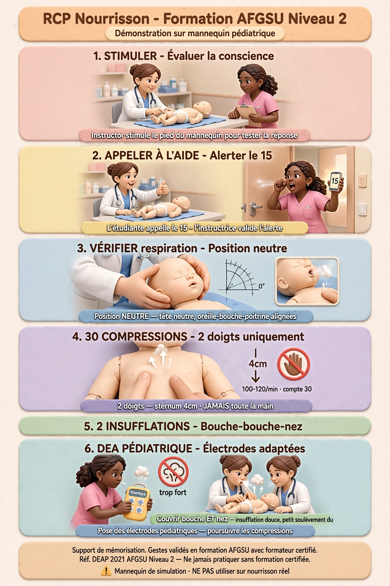
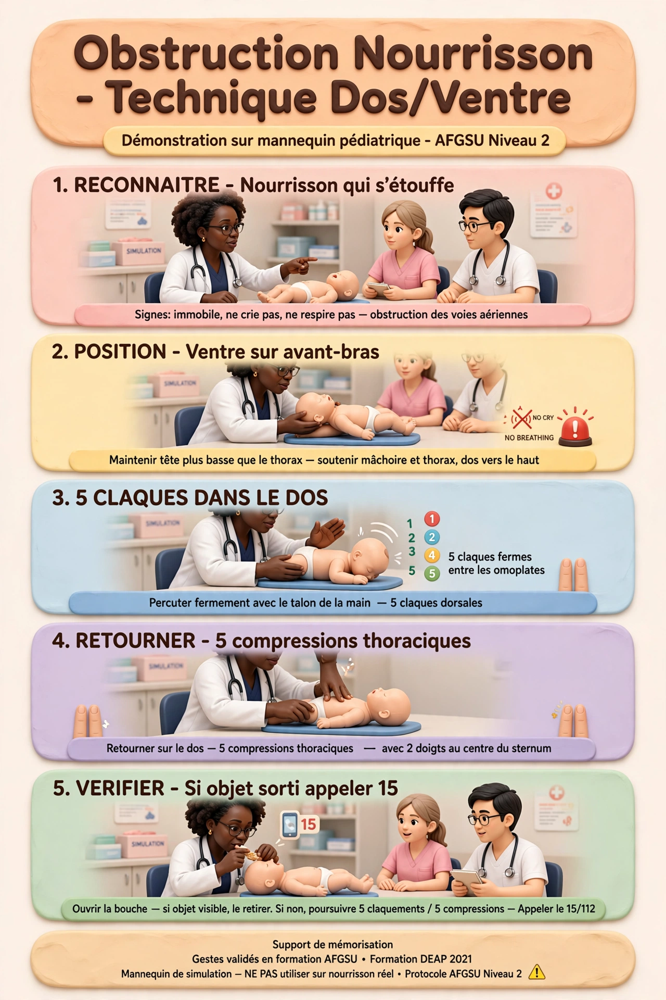
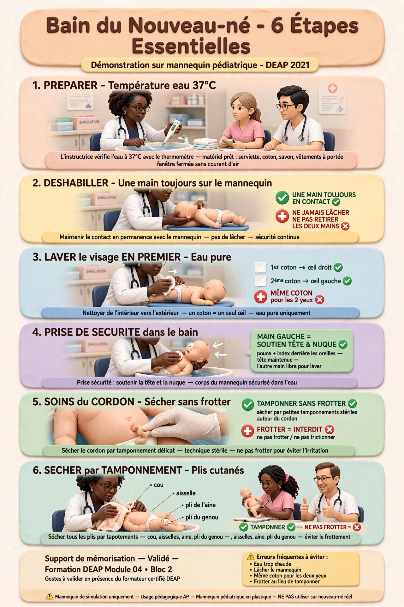

🎓 Ces illustrations sont réalisées sur mannequins pédiatriques de simulation — contexte AFGSU Niveau 2. Ne jamais pratiquer ces gestes sans formation certifiée avec formateur.
AFGSU NIVEAU 2 · URGENCES PÉDIATRIQUES
RCP Nourrisson — Formation AFGSU Niveau 2
DEAP 2021 · AFGSU Niveau 2 · Mannequin pédiatrique

⚠️ Support de mémorisation des étapes.
Les gestes techniques précis sont validés en formation AFGSU avec votre formateur certifié.
Réf. DEAP 2021 · AFGSU Niveau 2 · Ne jamais pratiquer sans formation certifiée.
Obstruction Nourrisson — Technique Dos/Ventre
DEAP 2021 · AFGSU Niveau 2 · Mannequin pédiatrique

⚠️ Support de mémorisation des étapes.
Les gestes techniques précis sont validés en formation AFGSU avec votre formateur certifié.
Réf. DEAP 2021 · AFGSU Niveau 2 · Ne jamais pratiquer sans formation certifiée.
MODULE 04 · BLOC 2 · SOINS DU NOUVEAU-NÉ
Bain du Nouveau-né — 6 Étapes Essentielles
DEAP 2021 · Module 04 · Bloc 2 · Mannequin pédiatrique

⚠️ Support de mémorisation des étapes.
Les gestes techniques précis sont validés en formation avec votre formateur certifié DEAP.
Réf. DEAP 2021 · Module 04 · Bloc 2